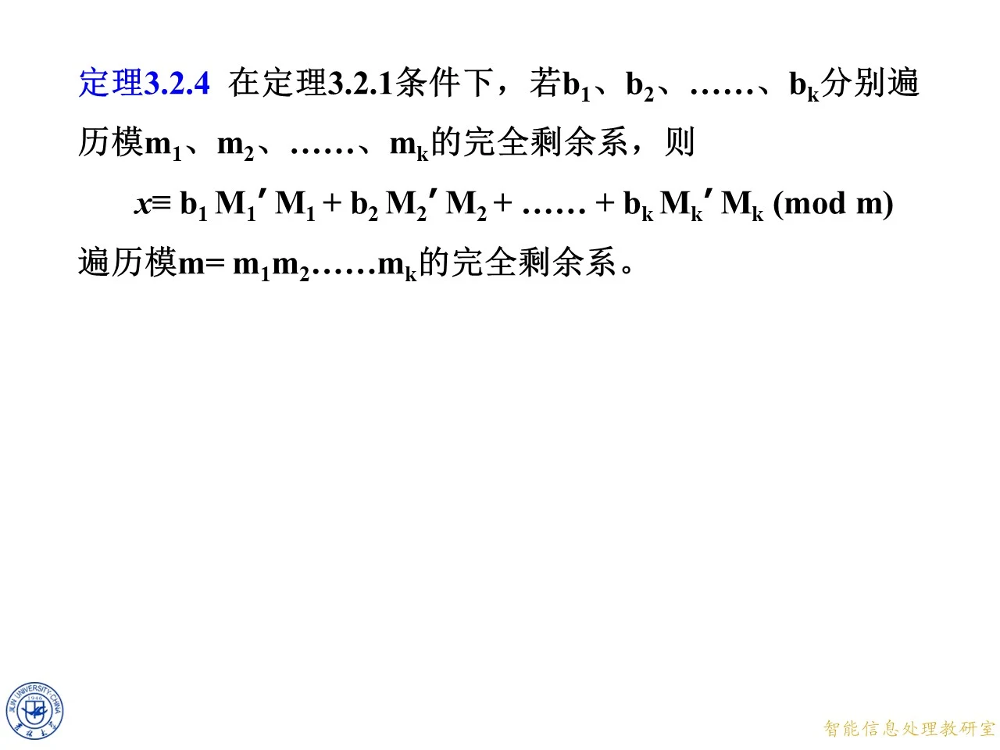
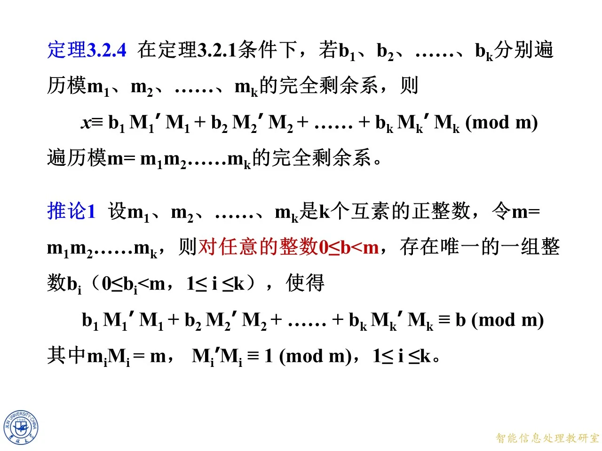
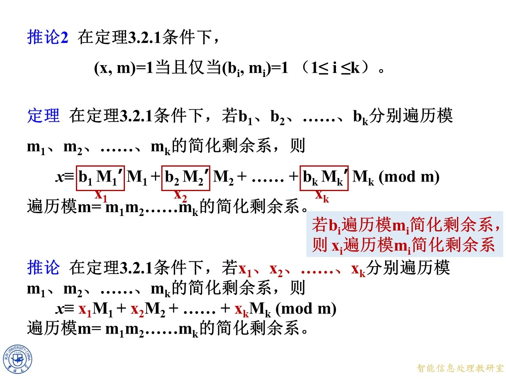

中国剩余定理与剩余系遍历是 3.2 节的高潮部分：前面已经建立了同余、剩余系与一次同余式的解法，本节把视角从「解方程」提升到「结构对应」。核心内容是定理 3.2.1（中国剩余定理）本身，以及它带来的一个漂亮推论——当各子模的余数分别独立遍历自己的完全（或简化）剩余系时，CRT 拼出的整数恰好不重不漏地遍历大模数的完全（或简化）剩余系。这一遍历性质既是中国剩余定理存在唯一性的另一种表述，也是后面把大模数问题拆到小模数上求解的理论基础。本课最后附带一页半期试题，作为前半章的综合练习。
定理 3.2.1（中国剩余定理）：解的存在与唯一
◆ p.280 ｜定理 3.2.1 与解的表达式（3.9）
本节正式给出中国剩余定理的完整表述。设 m 1 , m 2 , … , m k m_1, m_2, \ldots, m_k m 1 , m 2 , … , m k b 1 , b 2 , … , b k b_1, b_2, \ldots, b_k b 1 , b 2 , … , b k
{ x ≡ b 1 ( m o d m 1 ) x ≡ b 2 ( m o d m 2 ) … x ≡ b k ( m o d m k ) \begin{cases} x\equiv b_1 \pmod{m_1} \\ x\equiv b_2 \pmod{m_2} \\ \ldots \\ x\equiv b_k \pmod{m_k} \end{cases} ⎩ ⎨ ⎧ x ≡ b 1 ( mod m 1 ) x ≡ b 2 ( mod m 2 ) … x ≡ b k ( mod m k )
（课件编号 3.8）一定有解，且在模 m 1 m 2 … m k m_1m_2\ldots m_k m 1 m 2 … m k
m = m 1 m 2 … m k , M i = m m i , i = 1 , … , k , m=m_1m_2\ldots m_k,\quad M_i=\frac{m}{m_i},\quad i=1,\ldots,k, m = m 1 m 2 … m k , M i = m i m , i = 1 , … , k ,
则同余式组的解可表示为
x ≡ b 1 M 1 ′ M 1 + b 2 M 2 ′ M 2 + … + b k M k ′ M k ( m o d m ) x\equiv b_1M_1'M_1+b_2M_2'M_2+\ldots+b_kM_k'M_k \pmod m x ≡ b 1 M 1 ′ M 1 + b 2 M 2 ′ M 2 + … + b k M k ′ M k ( mod m )
（课件编号 3.9），其中 M i ′ M i ≡ 1 ( m o d m i ) M_i'M_i\equiv1\pmod{m_i} M i ′ M i ≡ 1 ( mod m i ) M i ′ M_i' M i ′ M i M_i M i m i m_i m i i = 1 , … , k i=1,\ldots,k i = 1 , … , k
两个要点值得咀嚼。第一，「两两互素」是定理成立的条件：它保证每个 M i M_i M i m i m_i m i M i ′ M_i' M i ′ m m m m m m x x x m m m i i i j ≠ i j\ne i j = i M j M_j M j m i m_i m i b j M j ′ M j ≡ 0 ( m o d m i ) b_jM_j'M_j\equiv0\pmod{m_i} b j M j ′ M j ≡ 0 ( mod m i ) i i i b i M i ′ M i ≡ b i ( m o d m i ) b_iM_i'M_i\equiv b_i\pmod{m_i} b i M i ′ M i ≡ b i ( mod m i ) M i ′ M i ≡ 1 M_i'M_i\equiv1 M i ′ M i ≡ 1 x ≡ b i ( m o d m i ) x\equiv b_i\pmod{m_i} x ≡ b i ( mod m i ) i i i
◆ p.281 ｜分析引入
本页进入定理的分析部分，先单独摆出同余式组本身，为后面逐条代入、化简做铺垫。页面主体就是方程组 x ≡ b 1 ( m o d m 1 ) x\equiv b_1\pmod{m_1} x ≡ b 1 ( mod m 1 ) x ≡ b 2 ( m o d m 2 ) x\equiv b_2\pmod{m_2} x ≡ b 2 ( mod m 2 ) x ≡ b k ( m o d m k ) x\equiv b_k\pmod{m_k} x ≡ b k ( mod m k )
定理 2.2.5：剩余系的遍历引理
◆ p.282-283 ｜定理 2.2.5 的陈述
证明 CRT 之前，课件先引入一个关于剩余系遍历的引理——定理 2.2.5（编号沿用课件旧章写法）：设 m 1 , m 2 , … , m k m_1, m_2, \ldots, m_k m 1 , m 2 , … , m k k k k x 1 , x 2 , … , x k x_1, x_2, \ldots, x_k x 1 , x 2 , … , x k m 1 , m 2 , … , m k m_1, m_2, \ldots, m_k m 1 , m 2 , … , m k
m 2 … m k x 1 + m 1 m 3 … m k x 2 + … + m 1 … m k − 1 x k m_2\ldots m_k x_1+m_1m_3\ldots m_k x_2+\ldots+m_1\ldots m_{k-1}x_k m 2 … m k x 1 + m 1 m 3 … m k x 2 + … + m 1 … m k − 1 x k
（p.282）遍历模 m 1 m 2 … m k m_1m_2\ldots m_k m 1 m 2 … m k
∑ i = 1 k ∏ j = 1 k m j m i x i . \sum_{i=1}^{k}\frac{\prod_{j=1}^{k}m_j}{m_i}x_i. i = 1 ∑ k m i ∏ j = 1 k m j x i .
注意第 i i i ∏ j = 1 k m j m i \dfrac{\prod_{j=1}^{k}m_j}{m_i} m i ∏ j = 1 k m j m i m_i m i M i M_i M i x = ∑ i = 1 k M i x i x=\sum_{i=1}^{k}M_ix_i x = ∑ i = 1 k M i x i x i x_i x i m m m
◆ p.284-285 ｜记号约定：m 1 m 2 … m k m_1m_2\ldots m_k m 1 m 2 … m k m m m m 1 m 2 … m k m_1m_2\ldots m_k m 1 m 2 … m k m m m m m m ∏ j = 1 k m j \prod_{j=1}^{k}m_j ∏ j = 1 k m j m m m
∑ i = 1 k m m i x i . \sum_{i=1}^{k}\frac{m}{m_i}x_i. i = 1 ∑ k m i m x i .
这一改写让「每项系数等于总积除以自己的模」这个结构一目了然，也是后面定义 M i = m m i M_i=\dfrac{m}{m_i} M i = m i m
◆ p.286-287 ｜引入 M i M_i M i x = ∑ i = 1 k m m i x i x=\sum_{i=1}^{k}\dfrac{m}{m_i}x_i x = ∑ i = 1 k m i m x i m m i \dfrac{m}{m_i} m i m M i = m m i M_i=\dfrac{m}{m_i} M i = m i m
x = ∑ i = 1 k M i x i , x=\sum_{i=1}^{k}M_ix_i, x = i = 1 ∑ k M i x i ,
它与定理 3.2.1 的解表达式 (3.9) x = ∑ b i M i ′ M i x=\sum b_iM_i'M_i x = ∑ b i M i ′ M i M i M_i M i M i M_i M i m i m_i m i m j m_j m j j ≠ i j\ne i j = i M i ≡ 0 M_i\equiv0 M i ≡ 0 m i m_i m i ( M i , m i ) = 1 (M_i,m_i)=1 ( M i , m i ) = 1
◆ p.288-290 ｜从 M i x i ≡ b i M_ix_i\equiv b_i M i x i ≡ b i x i x_i x i
M i x i ≡ b i ( m o d m i ) ⟹ x i ≡ M i − 1 b i ( m o d m i ) , i = 1 , … , k . M_ix_i\equiv b_i \pmod{m_i}\ \Longrightarrow\ x_i\equiv M_i^{-1}b_i \pmod{m_i},\quad i=1,\ldots,k. M i x i ≡ b i ( mod m i ) ⟹ x i ≡ M i − 1 b i ( mod m i ) , i = 1 , … , k .
理由分两层。第一，为什么能写出 M i x i ≡ b i ( m o d m i ) M_ix_i\equiv b_i\pmod{m_i} M i x i ≡ b i ( mod m i ) x = ∑ j M j x j x=\sum_jM_jx_j x = ∑ j M j x j i i i M j x j M_jx_j M j x j j ≠ i j\ne i j = i m i m_i m i m i m_i m i M i x i ≡ b i ( m o d m i ) M_ix_i\equiv b_i\pmod{m_i} M i x i ≡ b i ( mod m i ) x i x_i x i ( M i , m i ) = 1 (M_i,m_i)=1 ( M i , m i ) = 1 M i M_i M i m i m_i m i m i m_i m i M i − 1 M_i^{-1} M i − 1 M i ′ M_i' M i ′
◆ p.291-296 ｜完成遍历论证
这六页（动画逐步展开的同一张幻灯片）把前面所有零件装配起来。链条如下：
顶部批注 ( M i ′ , m i ) = 1 (M_i', m_i)=1 ( M i ′ , m i ) = 1 b i b_i b i m i m_i m i M i ′ M_i' M i ′ x i ≡ M i ′ b i ( m o d m i ) x_i\equiv M_i'b_i\pmod{m_i} x i ≡ M i ′ b i ( mod m i ) m i m_i m i
于是把每个 x i = M i ′ b i x_i=M_i'b_i x i = M i ′ b i x = ∑ i = 1 k M i x i x=\sum_{i=1}^{k}M_ix_i x = ∑ i = 1 k M i x i
x = ∑ i = 1 k M i x i = ∑ i = 1 k b i M i ′ M i . x=\sum_{i=1}^{k}M_ix_i=\sum_{i=1}^{k}b_iM_i'M_i. x = i = 1 ∑ k M i x i = i = 1 ∑ k b i M i ′ M i .
由定理 2.2.5，因为各 x i x_i x i m i m_i m i x x x m m m m 1 m 2 … m k m_1m_2\ldots m_k m 1 m 2 … m k
这一论证同时给出了 CRT 的存在性（取 b i b_i b i x x x b i b_i b i m m m x x x m 1 m 2 … m k = m m_1m_2\ldots m_k=m m 1 m 2 … m k = m m m m
◆ p.297 ｜定理 3.2.4
把上面装配出的结论正式命名为定理 3.2.4：在定理 3.2.1 条件下，若 b 1 , b 2 , … , b k b_1, b_2, \ldots, b_k b 1 , b 2 , … , b k m 1 , m 2 , … , m k m_1, m_2, \ldots, m_k m 1 , m 2 , … , m k
x ≡ b 1 M 1 ′ M 1 + b 2 M 2 ′ M 2 + … + b k M k ′ M k ( m o d m ) x\equiv b_1M_1'M_1+b_2M_2'M_2+\ldots+b_kM_k'M_k \pmod m x ≡ b 1 M 1 ′ M 1 + b 2 M 2 ′ M 2 + … + b k M k ′ M k ( mod m )
遍历模 m = m 1 m 2 … m k m=m_1m_2\ldots m_k m = m 1 m 2 … m k b i b_i b i x i = M i ′ b i x_i=M_i'b_i x i = M i ′ b i

课件原图 · 9月23日授课 · 第 736 页 查看前后已收录原页 → 一一对应与推论 1
◆ p.298-300 ｜CRT 给出从余数元组到解的映射
分析页换了一个角度总结 CRT：p.298 只摆出同余式组；p.299 加上单向箭头「给定 ( b 1 , b 2 , … , b k ) (b_1, b_2, \ldots, b_k) ( b 1 , b 2 , … , b k ) m m m x x x m m m
◆ p.301-303 ｜反方向也唯一：一一对应
p.301 在图上补上反向箭头：「给定 x x x b i b_i b i b i b_i b i m i m_i m i x x x b i ≡ x ( m o d m i ) b_i\equiv x\pmod{m_i} b i ≡ x ( mod m i ) ( b 1 , … , b k ) (b_1,\ldots,b_k) ( b 1 , … , b k ) x x x
( b 1 , b 2 , … , b k ) ⇌ 代入同余式组 中国剩余定理 x (b_1, b_2, \ldots, b_k)\ \xrightleftharpoons[\text{代入同余式组}]{\text{中国剩余定理}}\ x ( b 1 , b 2 , … , b k ) 中国剩余定理 代入同余式组 x
是一一对应。这是 CRT 最深刻的解读：模 m m m Z m 1 × ⋯ × Z m k \mathbb{Z}_{m_1}\times\cdots\times\mathbb{Z}_{m_k} Z m 1 × ⋯ × Z m k
◆ p.304-306 ｜定理 3.2.4 重述与推论 1
p.304 在对应图旁写上「一一对应」作结。p.305 把定理 3.2.4 的完整陈述与推论 1 放在同一页，p.306 与 p.305 几乎相同（仅把推论中待表示的整数记号由 x x x b b b m 1 , m 2 , … , m k m_1, m_2, \ldots, m_k m 1 , m 2 , … , m k k k k m = m 1 m 2 … m k m=m_1m_2\ldots m_k m = m 1 m 2 … m k 0 ≤ b < m 0\le b<m 0 ≤ b < m b i b_i b i 0 ≤ b i < m i 0\le b_i<m_i 0 ≤ b i < m i 1 ≤ i ≤ k 1\le i\le k 1 ≤ i ≤ k
b 1 M 1 ′ M 1 + b 2 M 2 ′ M 2 + … + b k M k ′ M k ≡ b ( m o d m ) , b_1M_1'M_1+b_2M_2'M_2+\ldots+b_kM_k'M_k\equiv b \pmod m, b 1 M 1 ′ M 1 + b 2 M 2 ′ M 2 + … + b k M k ′ M k ≡ b ( mod m ) ,
其中 m i M i = m m_iM_i=m m i M i = m M i ′ M i ≡ 1 ( m o d m i ) M_i'M_i\equiv1\pmod{m_i} M i ′ M i ≡ 1 ( mod m i ) 1 ≤ i ≤ k 1\le i\le k 1 ≤ i ≤ k m m m M i ′ M_i' M i ′ m i m_i m i M i ′ M i ≡ 1 ( m o d m i ) M_i'M_i\equiv1\pmod{m_i} M i ′ M i ≡ 1 ( mod m i )
推论 1 是「一一对应」的代数化说法：任何 [ 0 , m ) [0, m) [ 0 , m ) b b b ( b 1 , … , b k ) (b_1,\ldots,b_k) ( b 1 , … , b k )
◆ p.307 ｜互素性在对应下保持
分析页进一步在对应图下加了一条双向箭头：
( b i , m i ) = 1 ⇌ ( x , m i ) = 1. (b_i, m_i)=1\ \xrightleftharpoons{}\ (x, m_i)=1. ( b i , m i ) = 1 ( x , m i ) = 1.
即：在 CRT 一一对应之下，b i b_i b i m i m_i m i x x x m i m_i m i x ≡ b i ( m o d m i ) x\equiv b_i\pmod{m_i} x ≡ b i ( mod m i ) ( b i , m i ) = 1 (b_i,m_i)=1 ( b i , m i ) = 1 x x x m i m_i m i d > 1 d>1 d > 1 d d d b i b_i b i x − b i x-b_i x − b i m i m_i m i d d d

课件原图 · 9月23日授课 · 第 745 页 查看前后已收录原页 → 推论 2 与简化剩余系遍历
◆ p.308-310 ｜推论 2：互素性的整体刻画
p.308-309 把上一页的双向箭头延续到整个方程组层面：若每个 ( b i , m i ) = 1 (b_i,m_i)=1 ( b i , m i ) = 1 i i i ( x , m i ) = 1 (x,m_i)=1 ( x , m i ) = 1 m 1 , … , m k m_1,\ldots,m_k m 1 , … , m k m i m_i m i m m m x x x ( x , m ) = 1 (x, m)=1 ( x , m ) = 1
推论 2：在定理 3.2.1 条件下，( x , m ) = 1 (x, m)=1 ( x , m ) = 1 ( b i , m i ) = 1 (b_i, m_i)=1 ( b i , m i ) = 1 1 ≤ i ≤ k 1\le i\le k 1 ≤ i ≤ k
定理：在定理 3.2.1 条件下，若 b 1 , b 2 , … , b k b_1, b_2, \ldots, b_k b 1 , b 2 , … , b k m 1 , m 2 , … , m k m_1, m_2, \ldots, m_k m 1 , m 2 , … , m k
x ≡ b 1 M 1 ′ M 1 + b 2 M 2 ′ M 2 + … + b k M k ′ M k ( m o d m ) x\equiv b_1M_1'M_1+b_2M_2'M_2+\ldots+b_kM_k'M_k \pmod m x ≡ b 1 M 1 ′ M 1 + b 2 M 2 ′ M 2 + … + b k M k ′ M k ( mod m )
遍历模 m = m 1 m 2 … m k m=m_1m_2\ldots m_k m = m 1 m 2 … m k
直观理解：简化剩余系是完全剩余系中「与模互素」的那些成员。CRT 一一对应把「与 m i m_i m i m i m_i m i m m m x x x m m m
◆ p.311-313 ｜遍历论证与不带逆元的推论
p.311-312 在定理上加红框批注：把 b i M i ′ b_iM_i' b i M i ′ x i x_i x i b i b_i b i m i m_i m i x i ≡ M i ′ b i ( m o d m i ) x_i\equiv M_i'b_i\pmod{m_i} x i ≡ M i ′ b i ( mod m i ) m i m_i m i
推论：在定理 3.2.1 条件下，若 x 1 , x 2 , … , x k x_1, x_2, \ldots, x_k x 1 , x 2 , … , x k m 1 , m 2 , … , m k m_1, m_2, \ldots, m_k m 1 , m 2 , … , m k
x ≡ x 1 M 1 + x 2 M 2 + … + x k M k ( m o d m ) x\equiv x_1M_1+x_2M_2+\ldots+x_kM_k \pmod m x ≡ x 1 M 1 + x 2 M 2 + … + x k M k ( mod m )
遍历模 m = m 1 m 2 … m k m=m_1m_2\ldots m_k m = m 1 m 2 … m k
这个推论与上一条定理的区别在于：表达式中不再出现逆元 M i ′ M_i' M i ′ M i M_i M i M i M_i M i M i ′ M_i' M i ′
拓展 （课件外补充）：由简化剩余系的元素个数立刻得到一个漂亮副产品。模 m m m φ ( m ) \varphi(m) φ ( m ) φ ( m i ) \varphi(m_i) φ ( m i ) φ ( m 1 ) φ ( m 2 ) … φ ( m k ) \varphi(m_1)\varphi(m_2)\ldots\varphi(m_k) φ ( m 1 ) φ ( m 2 ) … φ ( m k ) m m m φ ( m 1 m 2 … m k ) = φ ( m 1 ) φ ( m 2 ) … φ ( m k ) \varphi(m_1m_2\ldots m_k)=\varphi(m_1)\varphi(m_2)\ldots\varphi(m_k) φ ( m 1 m 2 … m k ) = φ ( m 1 ) φ ( m 2 ) … φ ( m k ) x i x_i x i b i b_i b i k k k m m m φ ( m ) \varphi(m) φ ( m )

课件原图 · 9月23日授课 · 第 752 页 查看前后已收录原页 → 半期试题
◆ p.314-315 ｜半期试题（第 1 题 10 分，2–7 题各 15 分）
这两页是本节末尾附上的半期试题清单，覆盖前半章多个知识点。逐题给出演算或提示：
第 1 题：设 p ≠ 3 p\ne3 p = 3 8 p 2 + 1 8p^2+1 8 p 2 + 1 8 p 2 + 1 = 9 p 2 − ( p + 1 ) ( p − 1 ) 8p^2+1=9p^2-(p+1)(p-1) 8 p 2 + 1 = 9 p 2 − ( p + 1 ) ( p − 1 ) p ≠ 3 p\ne3 p = 3 p p p p ≡ ± 1 ( m o d 3 ) p\equiv\pm1\pmod3 p ≡ ± 1 ( mod 3 ) p 2 ≡ 1 ( m o d 3 ) p^2\equiv1\pmod3 p 2 ≡ 1 ( mod 3 ) 9 p 2 ≡ 0 ( m o d 3 ) 9p^2\equiv0\pmod3 9 p 2 ≡ 0 ( mod 3 ) p − 1 p-1 p − 1 p + 1 p+1 p + 1 p − 1 , p , p + 1 p-1, p, p+1 p − 1 , p , p + 1 p p p 3 ∣ ( p − 1 ) ( p + 1 ) 3\mid(p-1)(p+1) 3 ∣ ( p − 1 ) ( p + 1 ) ( p + 1 ) ( p − 1 ) ≡ 0 ( m o d 3 ) (p+1)(p-1)\equiv0\pmod3 ( p + 1 ) ( p − 1 ) ≡ 0 ( mod 3 ) 8 p 2 + 1 ≡ 0 − 0 ≡ 0 ( m o d 3 ) 8p^2+1\equiv0-0\equiv0\pmod3 8 p 2 + 1 ≡ 0 − 0 ≡ 0 ( mod 3 ) p ≥ 5 p\ge5 p ≥ 5 8 p 2 + 1 ≥ 201 > 3 8p^2+1\ge201>3 8 p 2 + 1 ≥ 201 > 3 p = 2 p=2 p = 2 8 p 2 + 1 = 33 = 3 × 11 8p^2+1=33=3\times11 8 p 2 + 1 = 33 = 3 × 11 p = 5 p=5 p = 5 p = 7 p=7 p = 7 p = 11 p=11 p = 11 8 p 2 + 1 8p^2+1 8 p 2 + 1
第 2 题：问 12345 1234 12345^{1234} 1234 5 1234 12345 1234 ( m o d 100 ) 12345^{1234}\pmod{100} 1234 5 1234 ( mod 100 ) 25 2 ≡ 25 ( m o d 100 ) 25^2\equiv25\pmod{100} 2 5 2 ≡ 25 ( mod 100 ) 25 × 9 ≡ 25 ( m o d 100 ) 25\times9\equiv25\pmod{100} 25 × 9 ≡ 25 ( mod 100 ) 25 i + 2 ⋅ 9 j ≡ 25 ( m o d 100 ) 25^{i+2\cdot9j}\equiv25\pmod{100} 2 5 i + 2 ⋅ 9 j ≡ 25 ( mod 100 ) 12345 ≡ 45 ( m o d 100 ) 12345\equiv45\pmod{100} 12345 ≡ 45 ( mod 100 ) 45 1234 ( m o d 100 ) 45^{1234}\pmod{100} 4 5 1234 ( mod 100 ) 45 2 = 2025 ≡ 25 ( m o d 100 ) 45^2=2025\equiv25\pmod{100} 4 5 2 = 2025 ≡ 25 ( mod 100 ) 25 n ≡ 25 ( m o d 100 ) 25^n\equiv25\pmod{100} 2 5 n ≡ 25 ( mod 100 ) n ≥ 1 n\ge1 n ≥ 1 25 2 ≡ 25 25^2\equiv25 2 5 2 ≡ 25 25 n + 1 = 25 n ⋅ 25 ≡ 25 ⋅ 25 ≡ 25 25^{n+1}=25^n\cdot25\equiv25\cdot25\equiv25 2 5 n + 1 = 2 5 n ⋅ 25 ≡ 25 ⋅ 25 ≡ 25 45 1234 ≡ ( 45 2 ) 617 ≡ 25 617 ≡ 25 ( m o d 100 ) 45^{1234}\equiv(45^2)^{617}\equiv25^{617}\equiv25\pmod{100} 4 5 1234 ≡ ( 4 5 2 ) 617 ≡ 2 5 617 ≡ 25 ( mod 100 ) p o w ( 12345 , 1234 , 100 ) = 25 \mathrm{pow}(12345,1234,100)=25 pow ( 12345 , 1234 , 100 ) = 25
第 3 题：用同余的方法证明：是否存在五个连续自然数，使得前四个数的平方和等于第五个数的平方。设五个连续自然数为 n , n + 1 , n + 2 , n + 3 , n + 4 n, n+1, n+2, n+3, n+4 n , n + 1 , n + 2 , n + 3 , n + 4
n 2 + ( n + 1 ) 2 + ( n + 2 ) 2 + ( n + 3 ) 2 = ( n + 4 ) 2 . n^2+(n+1)^2+(n+2)^2+(n+3)^2=(n+4)^2. n 2 + ( n + 1 ) 2 + ( n + 2 ) 2 + ( n + 3 ) 2 = ( n + 4 ) 2 .
左边展开为 4 n 2 + 12 n + 14 4n^2+12n+14 4 n 2 + 12 n + 14 n 2 + 8 n + 16 n^2+8n+16 n 2 + 8 n + 16
3 n 2 + 4 n − 2 = 0. 3n^2+4n-2=0. 3 n 2 + 4 n − 2 = 0.
左边模 3 余 n + 1 n+1 n + 1 3 n 2 ≡ 0 3n^2\equiv0 3 n 2 ≡ 0 4 n ≡ n 4n\equiv n 4 n ≡ n − 2 ≡ 1 -2\equiv1 − 2 ≡ 1 n + 1 ≡ 0 ( m o d 3 ) n+1\equiv0\pmod3 n + 1 ≡ 0 ( mod 3 ) n ≡ 2 ( m o d 3 ) n\equiv2\pmod3 n ≡ 2 ( mod 3 ) n = 3 t − 1 n=3t-1 n = 3 t − 1 3 ( 3 t − 1 ) 2 + 4 ( 3 t − 1 ) − 2 = 27 t 2 − 18 t + 3 + 12 t − 4 − 2 = 27 t 2 − 6 t − 3 = 3 ( 9 t 2 − 2 t − 1 ) = 0 3(3t-1)^2+4(3t-1)-2=27t^2-18t+3+12t-4-2=27t^2-6t-3=3(9t^2-2t-1)=0 3 ( 3 t − 1 ) 2 + 4 ( 3 t − 1 ) − 2 = 27 t 2 − 18 t + 3 + 12 t − 4 − 2 = 27 t 2 − 6 t − 3 = 3 ( 9 t 2 − 2 t − 1 ) = 0 9 t 2 − 2 t − 1 = 0 9t^2-2t-1=0 9 t 2 − 2 t − 1 = 0 Δ = ( − 2 ) 2 + 4 × 9 × 1 = 40 \Delta=(-2)^2+4\times9\times1=40 Δ = ( − 2 ) 2 + 4 × 9 × 1 = 40
第 4 题：解同余式方程 589 x ≡ 1026 ( m o d 817 ) 589x\equiv1026\pmod{817} 589 x ≡ 1026 ( mod 817 ) gcd ( 589 , 817 ) \gcd(589, 817) g cd( 589 , 817 ) 817 = 3 × 589 + 228 817=3\times589+228 817 = 3 × 589 + 228 817 = 589 + 228 817=589+228 817 = 589 + 228 589 = 2 × 228 + 133 589=2\times228+133 589 = 2 × 228 + 133 228 = 133 + 95 228=133+95 228 = 133 + 95 133 = 95 + 38 133=95+38 133 = 95 + 38 95 = 2 × 38 + 19 95=2\times38+19 95 = 2 × 38 + 19 38 = 2 × 19 + 0 38=2\times19+0 38 = 2 × 19 + 0 gcd = 19 \gcd=19 g cd= 19 19 ∣ 1026 19\mid1026 19 ∣ 1026 1026 = 19 × 54 1026=19\times54 1026 = 19 × 54 31 x ≡ 54 ( m o d 43 ) 31x\equiv54\pmod{43} 31 x ≡ 54 ( mod 43 ) 31 31 31 43 43 43 13 × 43 − 18 × 31 = 1 13\times43-18\times31=1 13 × 43 − 18 × 31 = 1 31 × ( − 18 ) ≡ 1 ( m o d 43 ) 31\times(-18)\equiv1\pmod{43} 31 × ( − 18 ) ≡ 1 ( mod 43 ) 31 − 1 ≡ − 18 ≡ 25 ( m o d 43 ) 31^{-1}\equiv-18\equiv25\pmod{43} 3 1 − 1 ≡ − 18 ≡ 25 ( mod 43 ) x ≡ 25 × 54 = 1350 ≡ 1350 − 31 × 43 = 1350 − 1333 = 17 ( m o d 43 ) x\equiv25\times54=1350\equiv1350-31\times43=1350-1333=17\pmod{43} x ≡ 25 × 54 = 1350 ≡ 1350 − 31 × 43 = 1350 − 1333 = 17 ( mod 43 ) 31 × 17 = 527 = 12 × 43 + 11 31\times17=527=12\times43+11 31 × 17 = 527 = 12 × 43 + 11 54 − 17 = 37 54-17=37 54 − 17 = 37 31 × 17 ≡ 527 ( m o d 43 ) 31\times17\equiv527\pmod{43} 31 × 17 ≡ 527 ( mod 43 ) 527 − 524 = 3 527-524=3 527 − 524 = 3 31 x ≡ 54 ( m o d 43 ) 31x\equiv54\pmod{43} 31 x ≡ 54 ( mod 43 ) x ≡ 17 ( m o d 43 ) x\equiv17\pmod{43} x ≡ 17 ( mod 43 ) 31 × 17 = 527 = 12 × 43 + 11 31\times17=527=12\times43+11 31 × 17 = 527 = 12 × 43 + 11 31 × 17 = 527 31\times17=527 31 × 17 = 527 527 = 12 × 43 + 11 527=12\times43+11 527 = 12 × 43 + 11 527 ≡ 11 ( m o d 43 ) 527\equiv11\pmod{43} 527 ≡ 11 ( mod 43 ) 54 ≡ 11 ( m o d 43 ) 54\equiv11\pmod{43} 54 ≡ 11 ( mod 43 )
x ≡ 17 + 43 t ( m o d 817 ) , t = 0 , 1 , … , 18 , x\equiv17+43t \pmod{817},\quad t=0,1,\ldots,18, x ≡ 17 + 43 t ( mod 817 ) , t = 0 , 1 , … , 18 ,
共 19 个解类（python 复算：589 × 17 ≡ 1026 ( m o d 817 ) 589\times17\equiv1026\pmod{817} 589 × 17 ≡ 1026 ( mod 817 )
第 6 题：有布 7 丈 5 尺（1 丈 = 10 尺，即 75 尺），大人一件衣服用布 7 尺 2 寸（即 7.2 尺），小孩一件用布 3 尺，问各裁剪多少件恰好把布用尽。设大人 x x x y y y 7.2 x + 3 y = 75 7.2x+3y=75 7.2 x + 3 y = 75 72 x + 30 y = 750 72x+30y=750 72 x + 30 y = 750 12 x + 5 y = 125 12x+5y=125 12 x + 5 y = 125 gcd ( 12 , 5 ) = 1 ∣ 125 \gcd(12,5)=1\mid125 g cd( 12 , 5 ) = 1 ∣ 125 12 x ≡ 125 ≡ 0 ( m o d 5 ) 12x\equiv125\equiv0\pmod5 12 x ≡ 125 ≡ 0 ( mod 5 ) 2 x ≡ 0 ( m o d 5 ) 2x\equiv0\pmod5 2 x ≡ 0 ( mod 5 ) x ≡ 0 ( m o d 5 ) x\equiv0\pmod5 x ≡ 0 ( mod 5 ) x = 5 k x=5k x = 5 k y = 25 − 12 k y=25-12k y = 25 − 12 k 0 ≤ k ≤ 25 12 0\le k\le\dfrac{25}{12} 0 ≤ k ≤ 12 25 k = 0 , 1 , 2 k=0,1,2 k = 0 , 1 , 2 ( x , y ) = ( 0 , 25 ) , ( 5 , 13 ) , ( 10 , 1 ) (x,y)=(0,25), (5,13), (10,1) ( x , y ) = ( 0 , 25 ) , ( 5 , 13 ) , ( 10 , 1 )
第 7 题：求 2013 1985 2004 2013^{1985^{2004}} 201 3 198 5 2004 1985 2004 1985^{2004} 198 5 2004 2013 ≡ 4 ( m o d 7 ) 2013\equiv4\pmod7 2013 ≡ 4 ( mod 7 ) 4 1985 2004 ( m o d 7 ) 4^{1985^{2004}}\pmod7 4 198 5 2004 ( mod 7 ) 4 1 ≡ 4 4^1\equiv4 4 1 ≡ 4 4 2 = 16 ≡ 2 4^2=16\equiv2 4 2 = 16 ≡ 2 4 3 ≡ 2 × 4 = 8 ≡ 1 ( m o d 7 ) 4^3\equiv2\times4=8\equiv1\pmod7 4 3 ≡ 2 × 4 = 8 ≡ 1 ( mod 7 ) E = 1985 2004 E=1985^{2004} E = 198 5 2004 1985 ≡ 2 ( m o d 3 ) 1985\equiv2\pmod3 1985 ≡ 2 ( mod 3 ) 2 ≡ − 1 ( m o d 3 ) 2\equiv-1\pmod3 2 ≡ − 1 ( mod 3 ) E ≡ ( − 1 ) 2004 ≡ 1 ( m o d 3 ) E\equiv(-1)^{2004}\equiv1\pmod3 E ≡ ( − 1 ) 2004 ≡ 1 ( mod 3 ) 4 E ≡ 4 1 ≡ 4 ( m o d 7 ) 4^E\equiv4^1\equiv4\pmod7 4 E ≡ 4 1 ≡ 4 ( mod 7 ) p o w ( 1985 , 2004 , 6 ) = 1 \mathrm{pow}(1985,2004,6)=1 pow ( 1985 , 2004 , 6 ) = 1 p o w ( 2013 , 1 , 7 ) = 4 \mathrm{pow}(2013,1,7)=4 pow ( 2013 , 1 , 7 ) = 4 φ ( 7 ) = 6 \varphi(7)=6 φ ( 7 ) = 6
◆ p.316 p.316 为过渡页（页面仅有 End 字样），无实质内容。